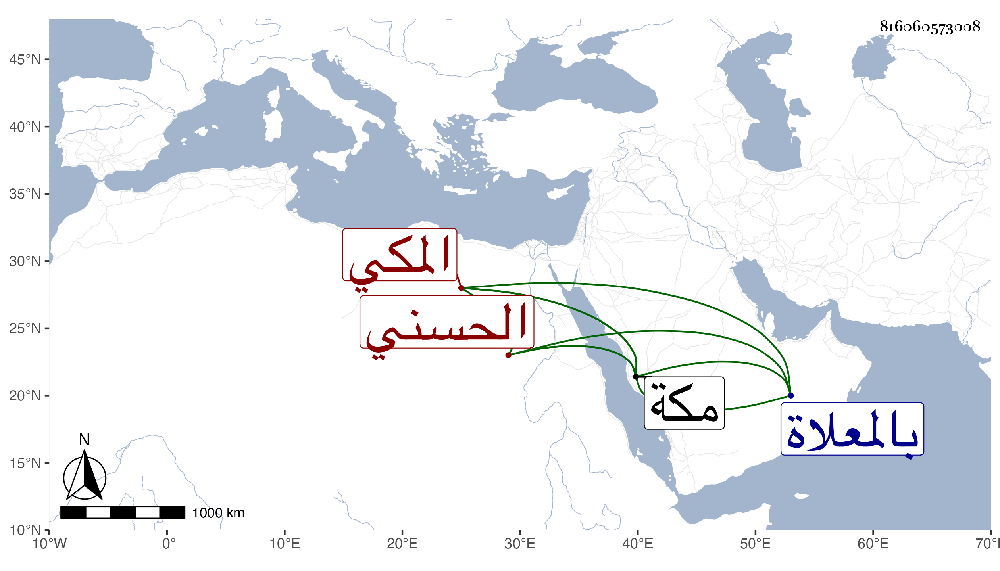

0902Sakhawi.DawLamic.ITO20230111-ara1.EIS1600.816060573008
Biography ID: 816060573008
201
أحمد بن مبارك بن رميثة بن أبي نمي الحسني المكي ويعرف بالهدباني نسبة لأمير حج وما حققت لماذا ، وكان من أعيان أشراف ذوي رميثة مشهورا فيهم بالشجاعة وتجرأ على قتل القائد محمد بن سنان بن عبد الله بن عمر العمري وما التفت إلى أقربائه مع فروسيتهم وتزوج ابنة السيد أحمد بن عجلان وورث منها عقارا طويلا تجمل به حاله . مات في شوال أو ذي القعدة سنة عشرين ونقل إلى مكة فدفن بالمعلاة منها عن بضع وستين سنة ، ترجمه الفاسي في مكة .
